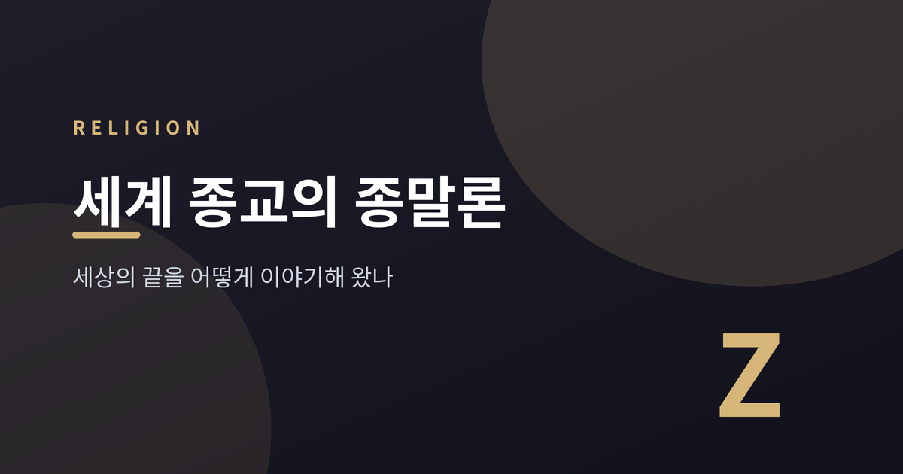
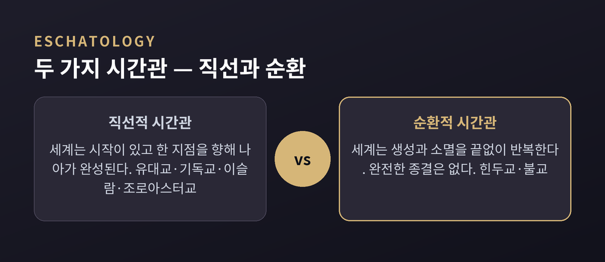
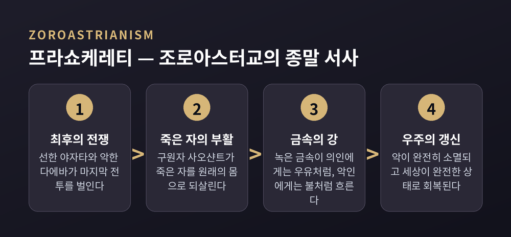
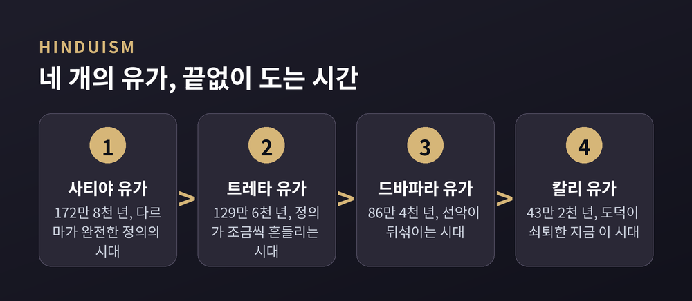
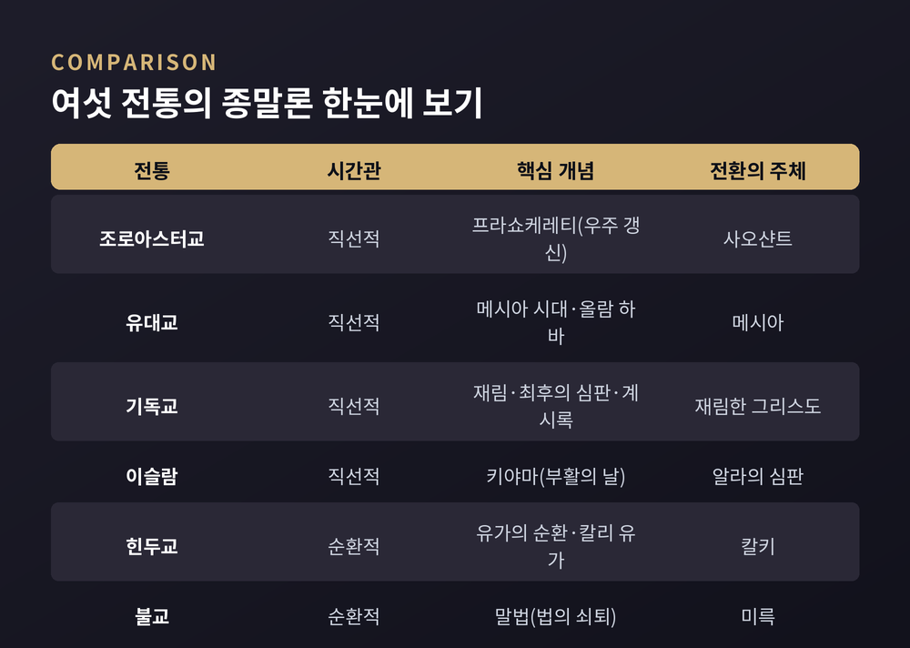

오늘은 세계 종교가 '세상의 끝'을 어떻게 그려왔는지 이야기해 보려 합니다. 유대교·기독교·이슬람·조로아스터교·힌두교·불교, 이렇게 여섯 전통을 나란히 놓고 비교종교학의 시선으로 살펴보겠습니다. 어느 쪽이 옳은가를 가리려는 글이 아니라, 인류가 끝을 상상해 온 방식이 얼마나 다양한지를 보여드리려는 글입니다.
'종말론(eschatology)'은 죽음, 부활, 시간의 끝, 최후의 심판, 메시아 시대처럼 '마지막 것들'을 다루는 교리를 가리킵니다. 원래는 기독교 신학에서 나온 말이지만, 지금은 여러 종교를 아우르는 학술 용어로 쓰입니다.
학자들은 이를 두 층위로 나눕니다. 한 사람의 영혼이 죽음 이후 어떻게 되는지를 다루는 개인적 종말론, 그리고 구원자의 도래와 선악의 최종 대결, 고통 없는 세계의 수립처럼 세계 전체의 결말을 다루는 우주적 종말론입니다.
여기서 중요한 갈림길이 하나 있습니다. 유대교·기독교·이슬람·조로아스터교는 세계가 한 방향으로 나아가 어느 한 지점에서 완성된다고 봅니다. 직선적 시간관입니다. 반면 힌두교와 불교는 세계가 생성과 소멸을 끝없이 반복한다고 봅니다. 순환적 시간관입니다. 이 차이가 여섯 전통의 종말론을 가르는 가장 큰 축입니다.

직선적 종말론의 원형으로 꼽히는 것이 조로아스터교입니다. 학자들은 자라투스트라가 그 이전까지 지배적이었던 '우주적 순환'과 '영원회귀' 사상을 폐기하고, 시작과 끝이 있는 시간 개념을 도입했다고 봅니다.
핵심 교리는 프라쇼케레티(Frashokereti), '세상을 경이롭게 되돌린다'는 뜻의 최종 갱신입니다. 9세기 문헌 『분다히슌』에는 이 종말이 자세히 그려져 있습니다. 선한 존재와 악한 존재가 마지막 전쟁을 벌이고, 구원자 사오샨트(Saoshyant)가 죽은 자를 부활시킵니다. 그다음 녹은 금속이 강처럼 대지를 흐르며 심판이 이루어지는데, 의인에게는 따뜻한 우유처럼, 악인에게는 불처럼 느껴진다고 전해집니다. 이 금속의 강은 마침내 지옥까지 흘러가 악을 완전히 소멸시킵니다.
눈여겨볼 대목은 개인과 세계의 관계입니다. 조로아스터교에서 구원은 각 사람의 생각·말·행동의 총합으로 결정되며, 신의 개입으로 바뀌지 않습니다. 즉 한 사람이 자기 영혼의 운명과 세계의 운명을 동시에 짊어지는 구조입니다.

다만 조로아스터교가 이후 유대교·기독교·이슬람의 종말론에 얼마나 영향을 미쳤는지는 학계에서도 의견이 갈립니다. 메리 보이스 같은 학자는 최후의 심판, 낙원 개념, 선악 이원론 등에서 나타나는 유사성이 우연이라 보기 어렵다고 주장합니다. 반면 레스터 그래비 등은 그 가능성을 인정하면서도, 유대교 유일신 사상의 고유성을 과소평가해서는 안 된다고 봅니다. 어느 한쪽으로 단정할 만큼 증거가 충분하지는 않다는 것이 대체적인 평가입니다.
유대 종말론은 두 개념을 축으로 합니다. 메시아(모쉬아흐)와 올람 하바, 즉 '오는 세상'입니다.
전통적 유대 사상에서 메시아는 신의 아들이 아니라 혈과 육을 지닌 인간입니다. 부모에게서 태어나고, 역사의 고통을 끝내며 인류 전체를 위한 축복의 새 시대를 여는 존재로 그려집니다.
올람 하바는 흥미롭게도 한 가지로 정리되지 않습니다. 어떤 문헌은 이를 메시아 도래 이후 죽은 자가 부활하고 완전한 평화가 이루어지는 완성된 세계, 즉 집단적·역사적 종착점으로 봅니다. 다른 문헌은 사후에 의인의 영혼이 머무는 하늘의 처소, 즉 개인적 내세로 봅니다. 두 해석이 오늘날까지 나란히 전해집니다. 유대 종말론이 기독교나 이슬람처럼 하나의 확정된 교리 체계로 정리되기보다, 여러 시대의 해석이 겹겹이 쌓인 형태를 띠는 이유이기도 합니다.
기독교 종말론의 중심에는 그리스도의 재림(파루시아)이 있습니다. 예수가 하늘에서 땅으로 돌아와 죽은 자를 부활시키고, 산 자와 죽은 자 모두를 최후로 심판하며, 하나님 나라를 완전히 세운다는 것입니다.
이 서사가 가장 압축적으로 담긴 문헌이 신약성서의 마지막 책, 요한계시록입니다. 신약에서 유일한 묵시문학으로, 최후의 심판과 하나님 나라의 승리를 그린 뒤 "오소서 주 예수여"라는 기도로 끝을 맺습니다.
다만 계시록 20장의 '천 년(밀레니엄)'을 어떻게 읽을지는 기독교 안에서도 입장이 갈립니다. 세 가지를 나란히 소개합니다.
어느 쪽이 정답인지는 이 글이 판정할 문제가 아닙니다. 다만 같은 본문을 두고도 이렇게 다른 시간의 지도가 그려진다는 점은, 종말론이 단일한 목소리가 아니라는 사실을 잘 보여줍니다.
이슬람 종말론의 중심은 야움 알 키야마(부활의 날), 다른 이름으로 야움 앗딘입니다. 세상의 끝이자 영원한 삶의 시작을 뜻합니다.
전승에 따르면 나팔 소리가 두 차례 울립니다. 첫 번째 소리에 모든 생명이 소멸하고, 두 번째 소리에 부활이 시작됩니다. 무덤이 열리고 심판받을 이들이 모입니다. 각자 살아온 행위에 따라 심판을 받아 천국 또는 지옥으로 나뉩니다.
그날에 이르기까지 나타난다고 전해지는 조짐들은 '소징조'와 '대징조'로 나뉩니다. 소징조는 종말에 이르기까지 지속적으로 나타나는 비교적 작은 사건들이고, 대징조는 마지막 시간 직전에 일어나는 큰 사건들입니다. 전승은 대징조로 열 가지를 꼽는데, 동쪽·서쪽·아라비아반도에서 각각 일어나는 지반 함몰이나 해가 지는 곳에서 뜨는 일 같은 극적인 장면들이 포함됩니다.
여기서부터는 시간관 자체가 바뀝니다. 힌두교의 우주는 완성되고 끝나는 것이 아니라, 거대한 주기 속에서 계속 돌아갑니다.
가장 큰 단위는 '칼파'입니다. 1칼파는 43억 2천만 년이고, 그만큼 긴 소멸의 시간이 뒤따릅니다. 이것이 창조신 브라흐마의 하루 밤낮에 해당하며, 브라흐마는 이런 하루를 100년(360일 기준)이나 삽니다. 그 안에는 다시 1,000번의 '차투르 유가' 주기가 있고, 하나의 차투르 유가는 네 시대로 나뉩니다. 사티야 유가(정의가 완전한 시대), 트레타 유가, 드바파라 유가를 거쳐 마지막이 칼리 유가, 도덕이 쇠퇴한 암흑의 시대입니다. 시대가 흐를수록 인간의 수명도 극적으로 줄어듭니다. 사티야 유가의 수천 년에서 지금 칼리 유가의 약 100년으로 말입니다.
전승에 따르면 지금은 기원전 3102년, 크리슈나가 지상을 떠난 해에 시작된 칼리 유가입니다. 『비슈누 푸라나』는 이 시대를 재산이 곧 미덕의 척도가 되고 거짓이 성공의 조건이 되는 시대로 묘사합니다. 낯설지 않게 들리는 대목이기도 합니다.
칼리 유가의 끝에는 비슈누의 마지막 화신 칼키가 백마를 타고 나타나 악을 멸하고 다르마를 다시 세운다고 전해집니다. 그러면 곧바로 다음 사티야 유가가 시작됩니다. 서구적 의미의 '최종 종말'은 없습니다. 파괴와 재생이 브라흐마의 생애가 다할 때까지, 즉 311조 년이 넘는 시간 동안 되풀이될 뿐입니다.

불교의 종말론 역시 순환적 우주론 안에 있습니다. 다만 힌두교와 달리, 불교는 붓다의 가르침(法, 다르마)이 시간이 지나며 쇠퇴해 가는 과정에 초점을 맞춥니다.
붓다 사후는 흔히 세 시대로 나뉩니다. 참된 법이 살아있는 정법, 법이 형식적으로만 남는 상법, 법이 쇠퇴하는 말법입니다. 한 계산법에 따르면 정법과 상법이 각각 천 년, 말법은 만 년간 이어진다고 합니다. 일본 불교도들은 붓다의 입멸을 기원전 949년으로 계산해, 말법이 서기 1052년에 시작되었다고 보았습니다. 이 말법사상은 특히 가마쿠라 시대 일본 불교에서 중대한 관심사였고, 정토종·니치렌종 같은 새로운 종파가 등장하는 배경이 되었습니다.
그렇다고 불교의 종말론이 절망으로 끝나지는 않습니다. 미래불 미륵이 정법이 다시 꽃피는 시대를 연다고 전해지기 때문입니다. 그가 나타나는 시점은 흔히 지금으로부터 56억 년 뒤로 이야기됩니다. 아득히 먼 미래지만, 법의 쇠퇴가 영원하지는 않다는 희망이 그 안에 담겨 있습니다.
지금까지 살펴본 여섯 전통을 한눈에 정리하면 이렇습니다.

시간관으로 보면 조로아스터교·유대교·기독교·이슬람은 세계가 한 번 완성되는 직선을 그리고, 힌두교·불교는 끝없이 도는 원을 그립니다. 구원자나 심판자의 역할을 하는 존재의 이름도 저마다 다릅니다. 사오샨트, 메시아, 재림한 그리스도, 칼키, 미륵. 부르는 이름은 다르지만 '지금의 어려움이 영원하지 않다'는 기대를 품고 있다는 점만은 공통적입니다.
정리하면 이렇습니다. 세상의 끝을 그리는 방식은 하나가 아닙니다. 어떤 전통은 화살처럼 한 방향으로 나아가는 결말을 그렸고, 어떤 전통은 원처럼 돌고 도는 순환을 그렸습니다.
"끝을 상상하는 방식이 그 종교가 시간과 인간을 이해하는 방식을 보여준다"
이 여섯 전통을 나란히 놓고 보면 그 말이 조금은 실감 나실 것입니다. 세상의 끝에 대해 어느 쪽 이야기가 더 마음에 와닿으시는지 궁금해집니다.